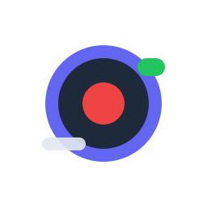

Loom App-ID
CaptureDesk nimmt über das Loom Record SDK auf und braucht dafür die App-ID einer eigenen Loom-Developer-App. Das ist kostenlos.
- Im eine App anlegen.
- Die öffentliche App-ID kopieren (nicht den Private Key).
- Hier einfügen und speichern.